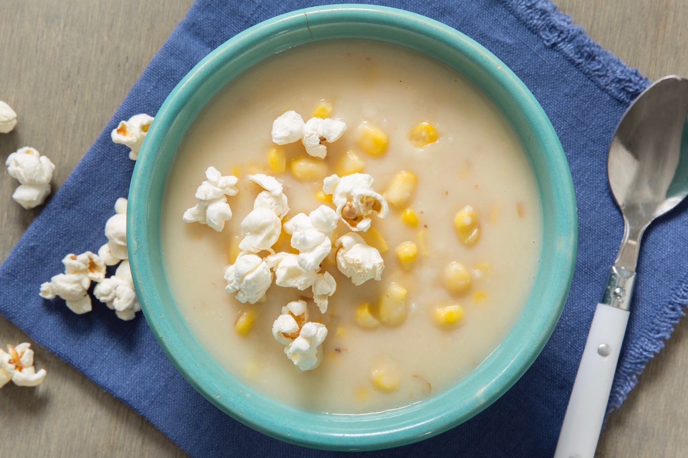

Sopa de Pipoca

Fez pipoca demais pro filme ontem a noite? Não jogue fora!
Transforme aquela pipoca queimada no fundo da panela em uma deliciosa sopa!
Você vai precisar de:
- Resto de pipoca (do dia anterior, de preferência)
- 15 batatas grandes
- Uma colher de sorvete de flocos
- 200gr de páprica apimentada
Comofas?
- Ferva uma panela de água
- Coloque as batatas descascadas pela metade, deixe cozinhar.
- Complete com a pipoca, o sorvete e a páprica.
- Só servir e se deliciar com essa delícia deliciosa!
Início